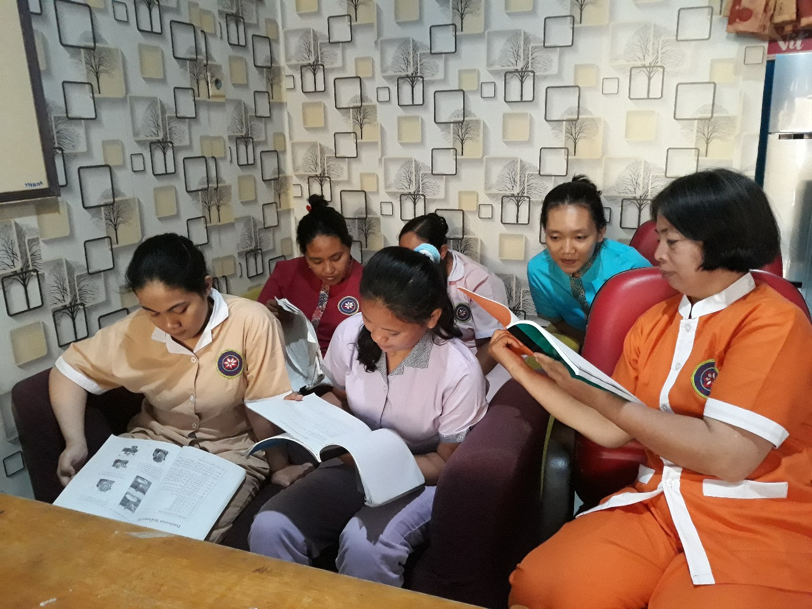
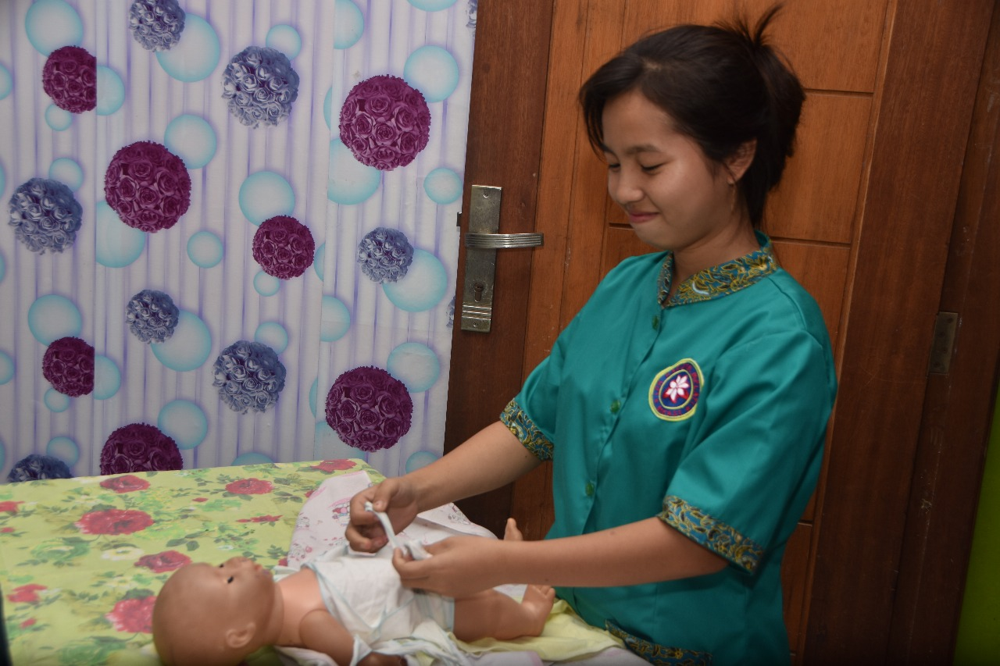
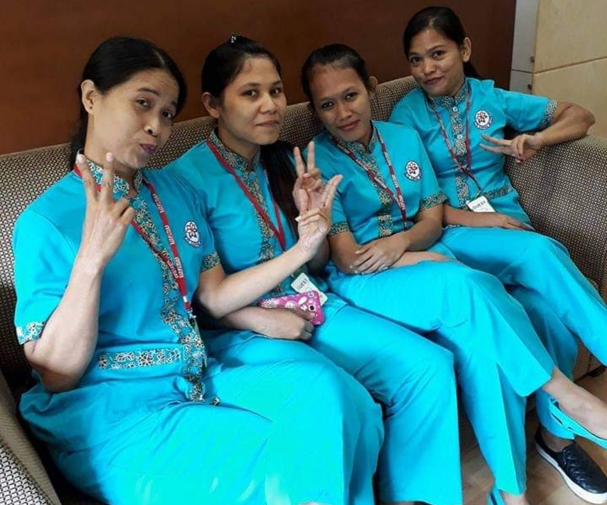
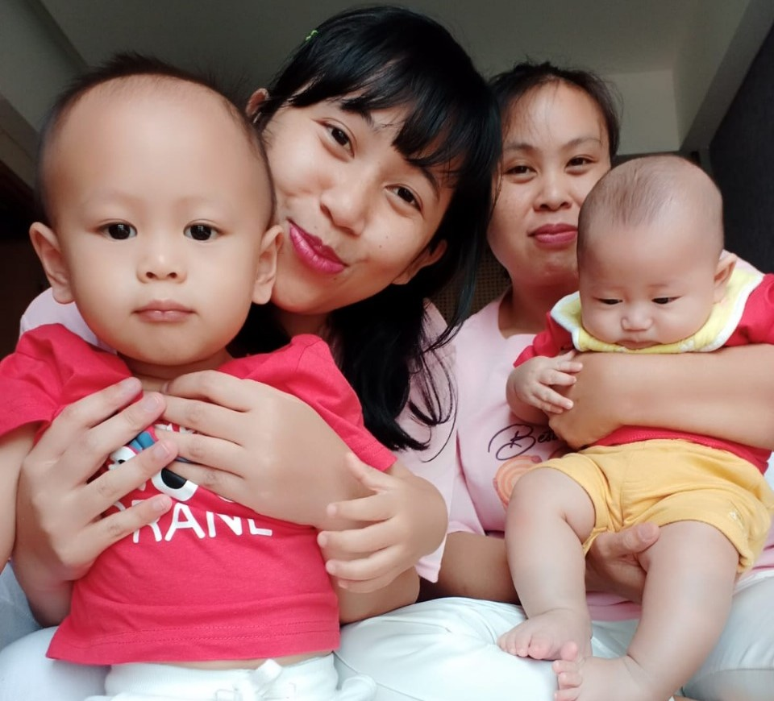
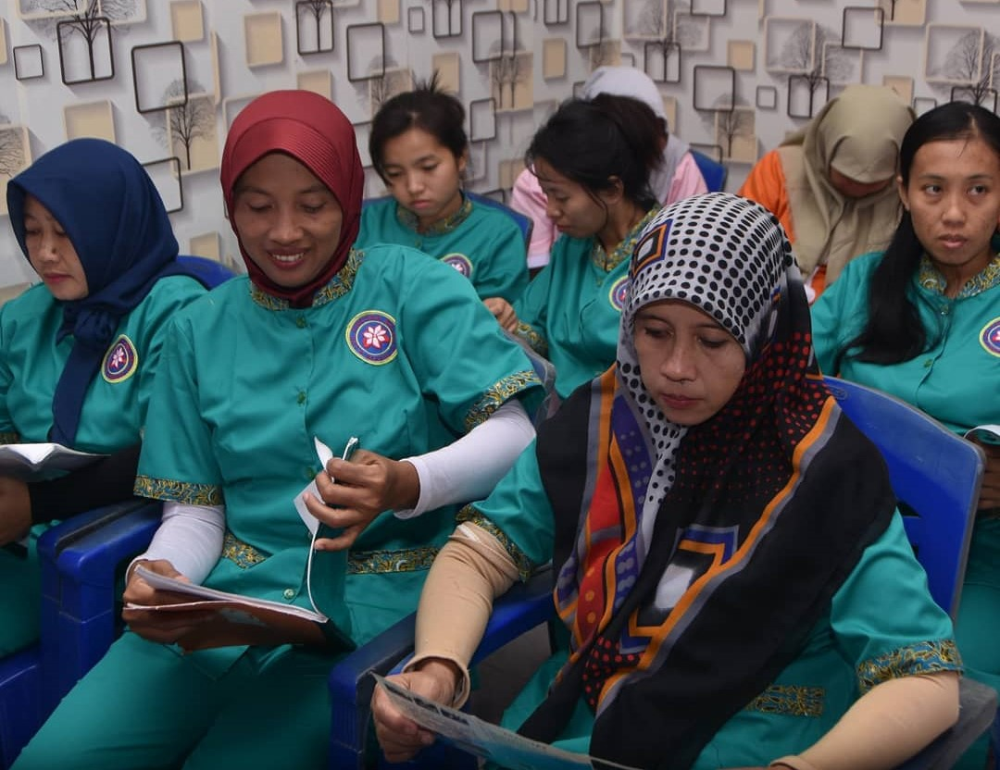

Sejarah Singkat Perusahaan
Didirikan pada tahun 2007, PT. Karisma Melati Sedayu Group lahir dari komitmen untuk menghadirkan solusi profesional di bidang penyaluran tenaga kerja berkualitas. Berawal dari sebuah yayasan kecil di daerah Jatiasih, Bekasi Selatan, kami tumbuh menjadi lembaga terpercaya yang telah menyalurkan ratusan tenaga kerja ke berbagai daerah di Indonesia — bahkan hingga ke luar negeri.


Visi
“Menjadi lembaga penyalur tenaga kerja yang profesional, terpercaya, dan unggul dalam membangun sumber daya manusia berintegritas tinggi.”
Misi
- Memberikan pelatihan dan pembinaan menyeluruh kepada calon tenaga kerja agar siap secara mental, etika, dan keterampilan.
- Menyediakan tenaga kerja yang kompeten, jujur, serta bertanggung jawab sesuai kebutuhan pengguna jasa.
- Membangun hubungan kemitraan yang harmonis antara yayasan, tenaga kerja, dan pengguna jasa.
- Meningkatkan kesejahteraan tenaga kerja melalui peluang kerja yang aman, layak, dan berkelanjutan.
- Mengembangkan sistem rekrutmen modern berbasis teknologi untuk menjangkau masyarakat luas.


Bidang Layanan
PT. Karisma Melati Sedayu Group menyediakan berbagai jenis tenaga kerja yang telah melalui proses seleksi ketat dan pelatihan profesional, antara lain:
- Baby Sitter = tenaga pengasuh anak dengan pelatihan tumbuh kembang dan keamanan anak.
- Perawat Lansia = tenaga yang terlatih dalam merawat orang tua atau pasien dengan empati dan kesabaran tinggi.
- Asisten Rumah Tangga (ART) = pekerja yang cekatan dan berpengalaman dalam menjaga kebersihan serta kenyamanan rumah.
Nilai Utama Kami
- 🤝 Kepercayaan: Setiap hubungan dimulai dari rasa aman dan percaya.
- ❤️ Kepedulian: Kami melatih tenaga kerja untuk bekerja dengan hati, bukan hanya keterampilan.
- 🌱 Tanggung Jawab: Setiap pekerja adalah representasi dari komitmen kami kepada keluarga Anda.
- ✨ Profesionalisme: Kami menjaga kualitas, etika, dan standar pelayanan di setiap langkah.


Legalitas & Perizinan
PT. Karisma Melati Sedayu Group telah terdaftar secara resmi sebagai lembaga penyalur tenaga kerja dalam negeri. Dan Kami beroperasi sesuai dengan peraturan pemerintah dan memiliki izin dari DisNaKer kota Bekasi.